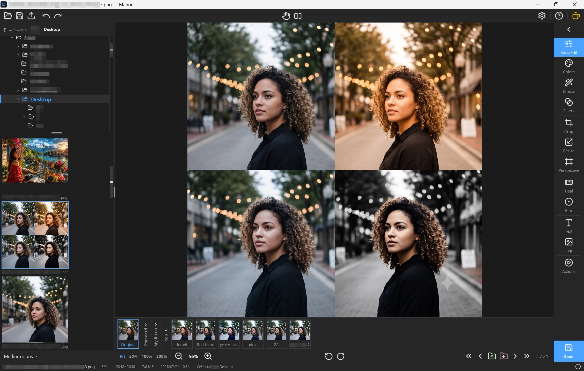

Browse & cull
A virtualized thumbnail strip — thousands of files stay smooth — beside a nested folder tree. Arrow keys browse and cull each photo into keep / reject folders. Nothing is deleted: culling only moves files, and Ctrl+Z undoes any move.
Manoni is a fast, simple photo browser, culler & editor — light enough to stay smooth on a weak laptop, simple enough to stay out of your way.

For photographers who shoot a lot and work on a modest machine. Manoni is built to cull a big batch fast, make quick but real edits, and hand back clean copies — and to stay out of your way while you do it.
Click a tool on the right-hand rail to open its panel — click any card below to see exactly what it does. Every edit is non-destructive, with undo, redo and a live histogram.
Undo / redo · live histogram · before / after compare · dark & light theme with an accent colour · an English, Georgian & Polish interface.
A virtualized thumbnail strip — thousands of files stay smooth — beside a nested folder tree. Arrow keys browse and cull each photo into keep / reject folders. Nothing is deleted: culling only moves files, and Ctrl+Z undoes any move.
A filter is a saved slider preset — one click applies the whole look. Save a photo and its edit is pinned as “Last” for the next shot. Export a filter group to a small .mnf file and share your looks between machines and friends.
Save a full-resolution copy as JPEG / PNG / WEBP — to an _edited/ subfolder or one fixed folder. Metadata is kept, stripped, or converted to sRGB for the web per your choice, and the original is never touched.
Browse and cull without reaching for the mouse. The Help button in the top bar opens a tabbed guide covering all of it.